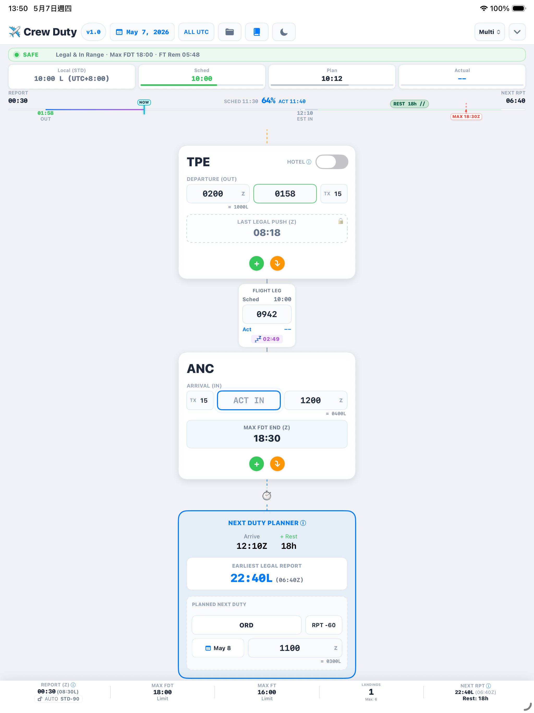
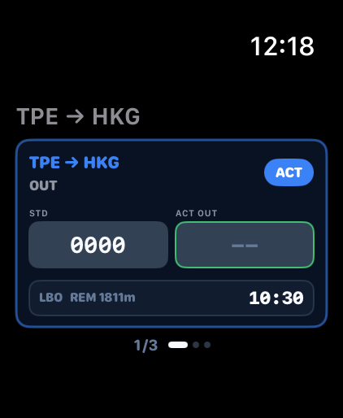
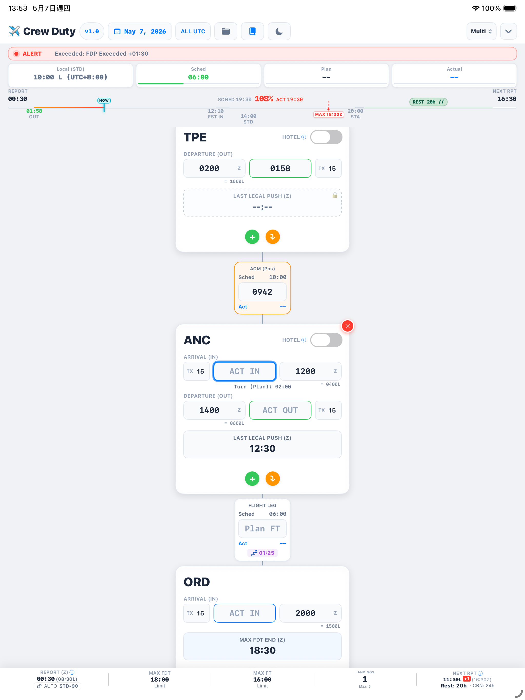
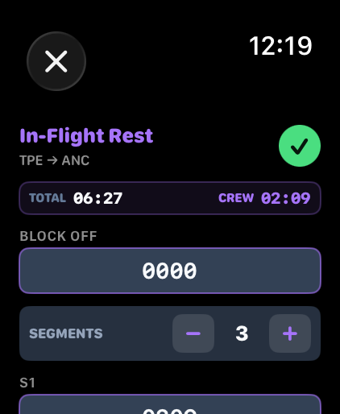

Route-based duty planning
Enter sectors with STD, STA, planned flight time, ACT OUT, and ACT IN to review duty and flight-time status.


A focused iOS calculator for crew duty, rest, flight time, LBO, next-duty planning, Dynamic Island visibility, and Apple Watch time entry.
Crew Duty Time is prepared as a paid, no-subscription App Store release. The public App Store download link will be added here as soon as Apple approval makes the listing available.
CDT keeps route timing, report assumptions, rest references, rolling flight time, LBO, cabin references, and next-duty checks in one local-first workflow for short-term crew planning.
Use planned times before duty, then enter actual OUT and IN values as the operation changes. CDT refreshes duty, flight-time, rest, LBO, and next-duty references from the same route timeline.


Enter sectors with STD, STA, planned flight time, ACT OUT, and ACT IN to review duty and flight-time status.
Adjust report time, taxi time, maximum flight time, maximum FDT, LBO, rest, cabin reference values, and related planning limits.
Keep current duty-stage context visible on supported iPhone models, including REPORT, STD, DLY, and LBO stages before ACT OUT is entered.
Review the active duty snapshot from the wrist and enter time values without digging through the full iPhone screen.
Check short-term rest, in-flight rest planning, LBO timing, multi-crew and double-crew planning references.
Review rolling 24-hour flight-time values for short-term awareness during a sequence.
No account sign-in is required. Core calculations are processed locally on device, with no data collection for the App Store privacy label.
CDT is positioned as a straightforward paid tool, without ads, recurring subscription pressure, or cloud-account lock-in.
The guide page carries practical usage instructions and a downloadable PDF manual. The release notes page is reserved for version-by-version details, compatibility notes, and behavior changes that are too detailed for the App Store "What's New" field.
CDT helps flight crew calculate and review duty-related values from user-entered data. Final legality must always be verified against company manuals, authority regulations, operational control requirements, and current operating conditions.